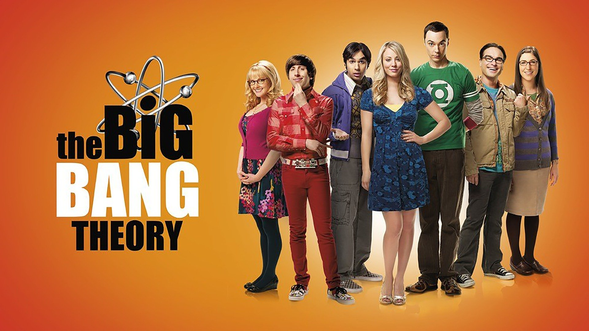

TV show: Bing Bang Theory
The Big Bang Theory is a comedy about brilliant physicists, Leonard and Sheldon, who are the kind of "beautiful minds" that understand how the universe works. But none of that genius helps them interact with people, especially women. All this begins to change when a free-spirited beauty named Penny moves in next door. Sheldon, Leonard's roommate, is quite content spending his nights playing Klingon Boggle with their socially dysfunctional friends, fellow Cal Tech scientists Wolowitz and Koothrappali. However, Leonard sees in Penny a whole new universe of possibilities - including love.
Trailer
Movie: The Green Mile

Paul Edgecomb (Tom Hanks) walked the mile with a variety of cons. He had never encountered someone like John Coffey (Michael Clarke Duncan), a massive black man convicted of brutally killing a pair of young sisters. Coffey had the size and strength to kill anyone, but not the demeanor. Beyond his simple, naive nature and a deathly fear of the dark, Coffey seemed to possess a prodigious, supernatural gift. Paul began to question whether Coffey was truly guilty of murdering the two girls.
Trailer